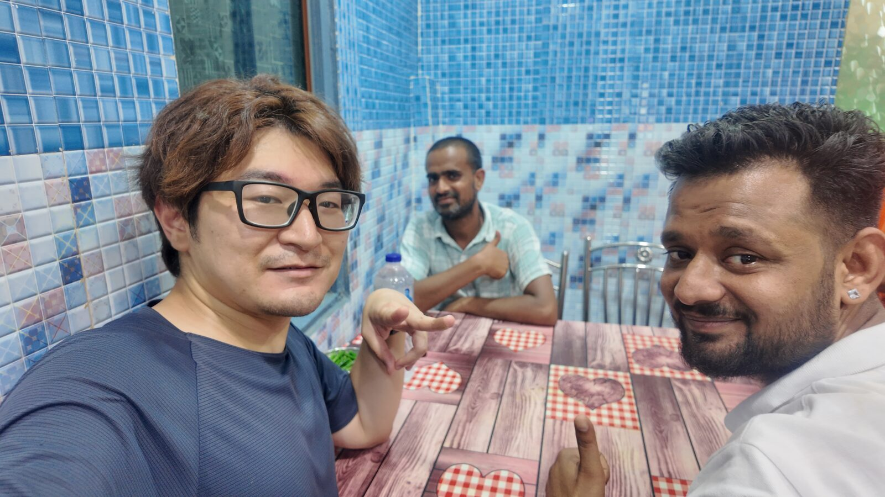
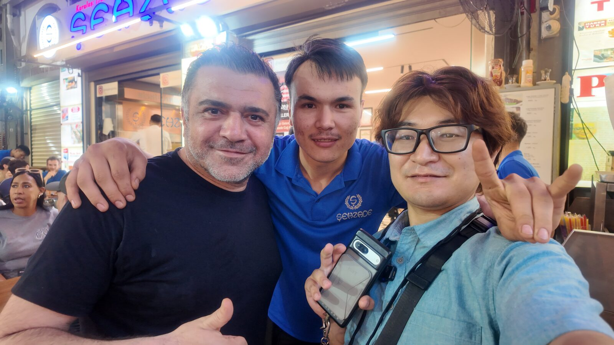
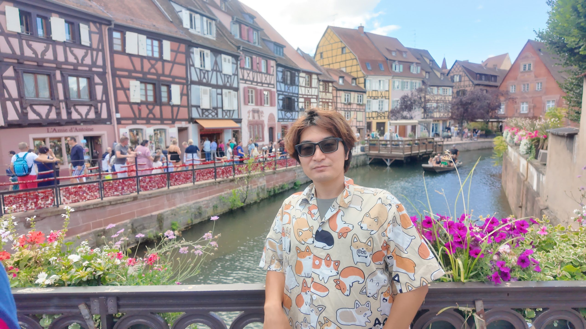
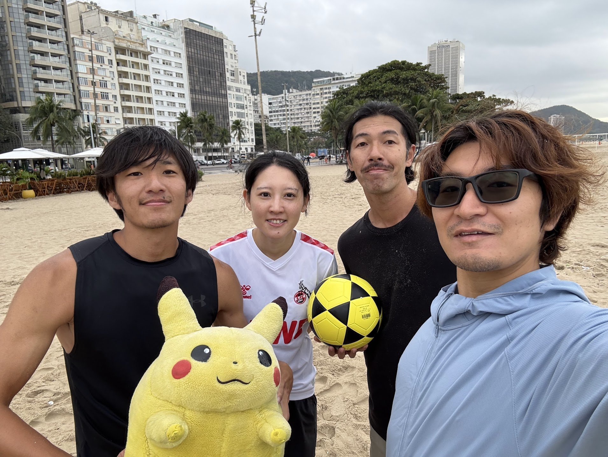
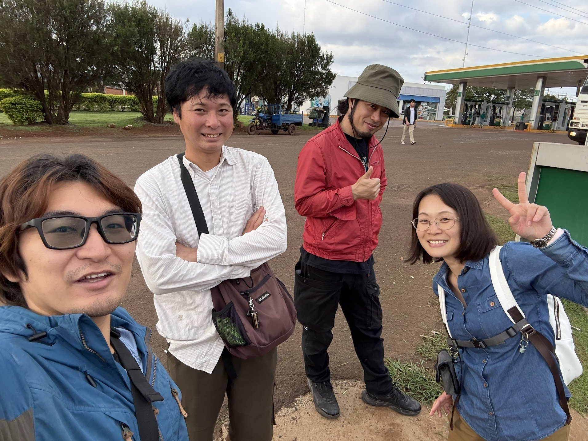
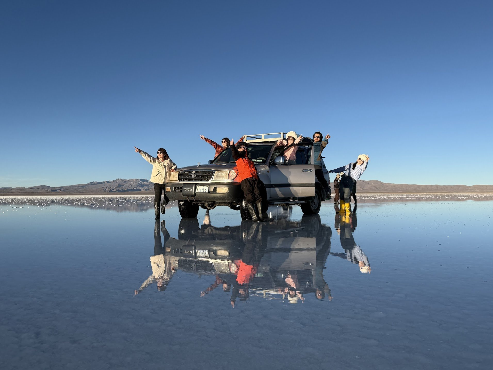
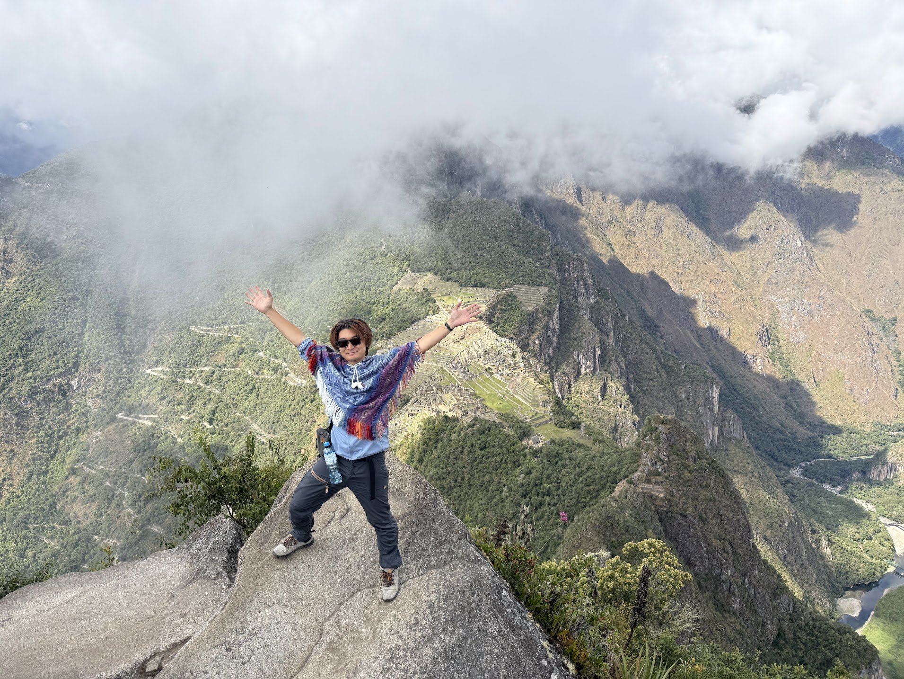
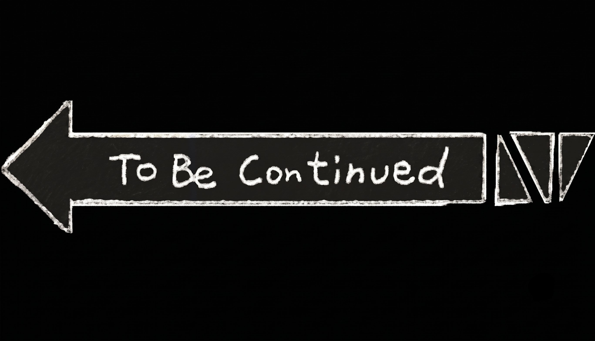

G チ ー ム
か に ち
岡 田 勘 一
序PROLOGUE
僕にとっての依存って何?
酒のアルコール抑うつ状態を緩和してくれる。
コーヒーのカフェイン憂鬱な朝にやる気を与えてくれる。
YouTubeやSNS無限に情報を摂取できる情報中毒。
DiscordやSlackのコミュニティ田舎に独りでいても、ゆるく繋がれる。
短絡的な
ドーパミン報酬。
……傾いているところはあるけれど、
まだ健全なレベルだという認識。
第一の依存支える依存
でも、人との深い関係を作るときに、
自分の癖が見えてきます。
「人」という字は
支え合っているという。
しかしよく見ると、
「寄りかかっている側」と
「支えている側」があります。
傾いてしまっている二人が、
なんとか人の形を保っている。
だから、寄りかかってくれる人が
いなくなると、
右側の支えている側も
倒れてしまいます。
僕はこの右側、
支えているほうにずっといました。
支えている側は、
誰かをサポートする側で
優しくて頼りになると思いますよね。
でも、こちらも
寄りかかってくる人に依存しているんです。
これが僕の依存の形でした。
誰かが困っていたり、
何かを求めていたら助けにいく。
もちろん相手のためにやっているのだけど、
それは自分の価値を見つけるため
でもあったんです。
自信のなさを埋めるために、
他者を依存させて
自己有用感を得ていた。
自分で自分を支えているのではなく、
誰かを支えることで
自己存在を確立していました。
他者からの承認で
自分を成り立たせている依存。
結論CONCLUSION
他者からの承認を得ずとも、
一人の力で立つこと。
それが「自立」の形ではないでしょうか。
自分で自分を肯定して、
健全な自己認識を育てる。
これが
僕の目指すべきところなのだと思います。
第二の依存安全圏への依存
前に、同じようなプレゼンを
やったときに、
言われました。
「プレゼンス(存在感)」
がない、と。
「これをあなたが発表する
独自性は何?」と。
よく調べて、
情報を揃えて、
綺麗にまとめることは、
できる。
……で?
それを
「岡田勘一」という、
あなたが発信する意味は?
俺は編集者という職業柄、
自分が「黒子」になることを
良しとしていました。
裏方になったほうが、
矢面に立たなくて楽だから。
意見や感想を言うのは
得意なんです。
コミュニティに話題を投下して
「波紋」を起こすのも好きです。
でもそれは、
安全な場所から
言葉の石を投げているだけ。
いざ自分の内面をさらけ出す
「自己開示」となると、
途端にしどろもどろになる。
心のパンツを脱ぐような、
腹を割って話すような、
自分に直接ダメージが当たるのが
怖いんです。
この恐怖が邪魔をして、
行動を回避している。
これが俺の、
もう一つの依存でした。
─
だから、
俺の発信する言葉は、
どこかから「借りてきた言葉」
ばかりでした。
自分自身が本当に
腹落ちしていない、
AIでも書けるような
綺麗に整えられた言葉。
そこには
生身の「プレゼンス」も、
泥臭さもありません。
自分のエゴを出せないでいる。
一歩引いたポジションで
傍観者になって、
当事者にならないようにしている。
対話をするときも、
いつの間にか傾聴側に回っていて、
自分の深いところの話に
ならないように回避しています。
でも、思い返すと――







世界一周の旅に出たとき、
本気で自分を解放して、
旅を楽しめたと思えたのは、
安全圏から飛び出して、
世界を旅する当事者として
没入できたから。
でも、日本に帰ってきたら、
また安全圏の
傍観者になってしまった。
どうしてか。
エゴを覗かれるのが怖いのか。
……怖いし、
そこまで強いエゴがないんです。
自分には情熱も偏愛もないのではないか、
という虚無感。
趣味もスキルも散漫で、
収束しない。
だから将来のビジョンも、
明確には決められていないんです。
5年後、10年後の自分を
定めていない。
キャリア、結婚、母や祖母のこと。
抽象を具体にしないまま、
「まぁなるようになるさ」と
曖昧にして。
なのに、
「自立したい」という
漠然とした憧れを持っています。
精神的自立、
経済的自立、
社会的自立。
理想だけは膨らませて、
……理想で溺死しそうになっています。
笑える話なんですけど、本当の話です。
「何が起こるかわからないから旅なんだ」
「ゴールを決める余裕なんて今はない」
……なんて言葉に縋って、
進むべき道を見据えたり、
やるべきタスクを
延々と先延ばししていました。
だから、とりあえず行動して、
仲間を作っている人が
羨ましかった。
妬ましかった。
独りで考えて、
独りで解決しようとしていた。
弱くて、かっこ悪くて、
ダサくて、ふがいない自分を出すのが、
怖かった。
誰かから頼られると嬉しいのに。
俺が誰かに頼ったら、
迷惑をかけてしまうと思い込んでいる。
この非対称性は何なのか。
自立とは、
「人」という字の成り立ちのように、
一人だけで
直立不動になることではない。
誰かに頼って、助けてもらって、
いくつもの依存先に
健全に支えてもらうこと。
自立って、
寝転がっていたら
できないんですよね。
まずは
立ち上がってみるところから。
ふらふらしていたら、
誰かに支えてほしいって
頼ってみる。
泥臭くても、
ダサくても、
そこから。
──
